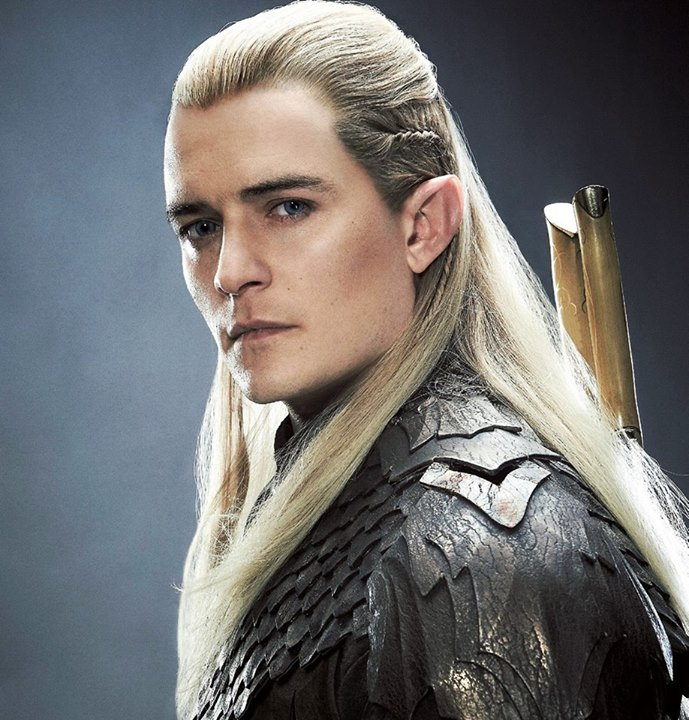

Personatges
Frodo Bolson

Samsagaz Gamgi
Gandalf el gris
Aragorn, fill de Arathorn
Legolas, l'elf dels boscos

Gimli, el nan

És un director, guionista i productor de cinema neozelandès, nascut el 31 d'octubre de 1961 a Wellington, capital de Nova Zelanda, Jackson en els seus inicis com a cineasta, té diversos llargmetratges abans de dirigir "El Senyor dels Anells", però fins a 1994 no va començar el seu reconeixement com a director, quan va ser nominat als Oscar com a millor guió amb la pel·lícula Heavenly creatures (Criatures Celestials) i sent aquest premiat al Festival de Venècia com a millor director, després de l'anterior, Jackson va realitzar "La Veritable Història Del Cinema" (Forgotten Silver, 1995), un fals documental sobre les aventures d'un cineasta, i a l'any següent la pel·lícula "The Frighteners" (1996), protagonitzat per Michael J. Fox, en què barrejava comèdia, ciència ficció i thriller. pocs anys després ens mostraria aquesta gran obra, sent una de les millors trilogies cinematogràfiques de l'època.
Peter Jackson
Frodo Bolson
Samsagaz Gamgi
Gandalf el gris
Aragorn, fill de Arathorn
Legolas, l'elf dels boscos
Gimli, el nan
Frodo Baggins en l'original anglès, Pertany a la raça dels hobbits. És fill de Drogo Bolsón i de Prímula Brandigamo, nebot de Bilbo Bolsón i mig cosí de Merry. Personatje que porta tot el ferro de la pel·lícula, junt el seu amic i defensor Samsagaz, noi valent, amb mental·litat aventurera, com el seu tiet Bilbo.

Frodo Bolson
L'acompnayant inseparable en tota aquesta aventura d'en Frodo, ens donarà moltes lliçons de que es ser més que un amic, encara que tingui algun descens a la cinta, Sam sempre demostrarà la seva lleialtat cap al seu amic.

Samsagaz Gamgi
El que marca el camí, el savi mag que sap el que es fa en tot moment, encara que encara que l'enemic sempre intentarà apartar del seu propòsit, Gandalf sempre té una sàvia estratègia per sortir dels seus malèfics plans.

Gandalf, el gris


Per acabar de redondejar amb aquesta meravellosa obra d'art, us porto un petit extra... a disfrutar nois!